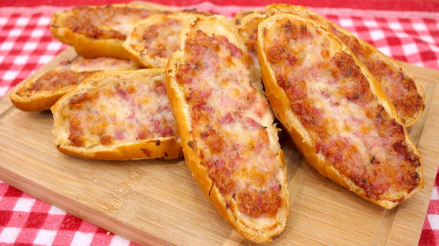

Tuscan Sausage Bread
Easy to make recipe of bread rolls filled with tuscan sausage and cheese. It is quick to make and a nice lunch for barbecues.
Ingredients
- bread rolls(you can look for "pão frances" as a reference)
- two tuscan sausages
- 6 slices of mozzarella cheese
- oregano
Steps
- Pre heat the air fryer in 180° for 5 minutes while you make the tuscan sausage bread
- Cut the bread roll in two, like you wold for filling it with butter, and press it's interior so that you can add the filling to it. The following steps should be applied for each bread slice
- Add a slice of cheese to the bread slice and press it against the bread interior
- Remove the filling of the tuscan sausage and press it against the cheese and bread slices
- Add another slice of cheese and the oregano on top of it
- Add the final slice of cheese on top of everything and put it in the air fryer for 8 to 10 minutes
- Now the recipe is ready to be served